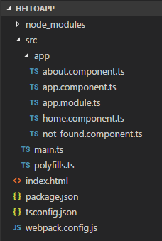
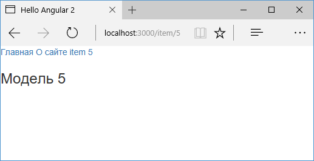

- TOC {:toc}
Параметры маршрута¶
{: .no_toc }
Маршруты могут определять параметры, через которые мы можем передавать компоненту какие-то данные извне. Для примера возьмем проект из прошлой темы:

В папку src/app добавим новый файл item.component.ts с новым компонентом:
1 2 3 4 5 6 7 8 9 10 11 12 13 14 15 | import { Component } from '@angular/core' import { ActivatedRoute } from '@angular/router' @Component({ selector: 'item-info', template: ` <h3>Модель {{ id }}</h3> ` }) export class ItemComponent { id: number constructor(private activateRoute: ActivatedRoute) { this.id = activateRoute.snapshot.params['id'] } } |
Для получения параметров маршрута нам необходим специальный сервис ActivatedRoute. Он содержит информацию о маршруте, в частности, параметры маршрута, параметры строки запроса и прочее. Он внедряется в приложение через механизм dependency injection, поэтому в конструкторе мы можем получить его.
Свойство snapshot хранит состояние маршрута, а состояние маршрута содержит переданные параметры.
В данном случае мы предполагаем, что параметр будет называться id, но это необязательно. Название параметра может быть любым.
Но пока нет никакого маршрута, который бы использовал данный компонент. Поэтому изменим класс модуля приложения:
1 2 3 4 5 6 7 8 9 10 11 12 13 14 15 16 17 18 19 20 21 22 | import { NgModule } from '@angular/core' import { FormsModule } from '@angular/forms' import { BrowserModule } from '@angular/platform-browser' import { Routes, RouterModule } from '@angular/router' import { AppComponent } from './app.component' import { AboutComponent } from './about.component' import { HomeComponent } from './home.component' import { NotFoundComponent } from './not-found.component' import { ItemComponent } from './item.component' // определение маршрутов const appRoutes: Routes = [{ path: '', component: HomeComponent }, { path: 'about', component: AboutComponent }, { path: 'item/:id', component: ItemComponent }, { path: '**', component: NotFoundComponent }] @NgModule({ imports: [BrowserModule, FormsModule, RouterModule.forRoot(appRoutes)], declarations: [AppComponent, HomeComponent, AboutComponent, NotFoundComponent, ItemComponent], bootstrap: [AppComponent] }) export class AppModule {} |
Здесь добавлен новый маршрут { path: 'item/:id', component: ItemComponent }
Токен :id представляет параметр маршрута. То есть мы сможем обратиться к компоненту с запросом типа /item/6, и число 6 будет представлять параметр id.
Теперь изменим главный компонент AppComponent:
1 2 3 4 5 6 7 8 9 10 11 12 13 14 15 16 17 18 | import { Component } from '@angular/core' import { Router } from '@angular/router' import { NgModel } from '@angular/forms' @Component({ selector: 'my-app', template: ` <div> <nav> <a routerLink="">Главная</a> <a routerLink="/about">О сайте</a> <a [routerLink]="['item', '5']">item 5</a> </nav> <router-outlet></router-outlet> </div> ` }) export class AppComponent {} |
При определении ссылки на компонент, который использует параметры маршрута, все необходимые параметры заключаются в квадратные скобки:
1 | <a [routerLink]="['item', '5']">item 5</a> |
И при запуске приложения мы сможем по ссылке обращаться к компоненту ItemComponent и передавать ему id=5:

Данный подход работает для одной ссылки, но что если у нас несколько ссылок на один и тот же компонент, но с разными id:
1 | <a [routerLink]="['item', '5']">item 5</a> <a [routerLink]="['item', '8']">item 8</a> |
Если мы сначала перейдем по первой ссылке, то компонент ItemComponent получит id=5. Если после этого мы перейдем по второй ссылке, ItemComponent будет продолжать хранить прежнее значение id = 5.
Чтобы решить эту проблему, нам надо динамически изменять значение id в компоненте ItemComponent, поэтому изменим его код:
1 2 3 4 5 6 7 8 9 10 11 12 13 14 15 16 17 | import { Component } from '@angular/core' import { ActivatedRoute } from '@angular/router' import { Subscription } from 'rxjs' @Component({ selector: 'item-info', template: ` <h3>Модель {{ id }}</h3> ` }) export class ItemComponent { private id: number private subscription: Subscription constructor(private activateRoute: ActivatedRoute) { this.subscription = activateRoute.params.subscribe(params => (this.id = params['id'])) } } |
Метод subscribe() позволяет установить подписку на изменение параметра маршрута. В этом случае компонент будет получать новое значение, и проблем с навигацией по ссылкам с разными параметрами не возникнет.